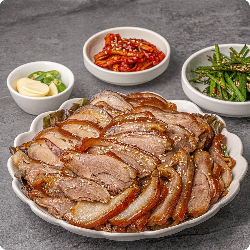

족발(문화어: 발족찜)은 돼지의 발을 간장과 여러 향신료를 곁들여 삶아서 조린 한국 요리이다. 보통 편을 내어 편육으로 먹는다. 중국 유래설이 있기는 하나 황해도의 토속음식에서 유래되었다는 설이 유력하며, 현대 한국의 족발요리 속에는 중국음식이라 느낄 수 있는 어떤 표식도 찾아볼 수 없고, 상추에 싸 먹는다거나 냉면 혹은 막국수와 함께 먹는 등 한국음식으로 완전히 자리잡은 한국 전통음식에 속한다. 한국에서는 예로부터 돼지를 푹 삶은 수육을 된장이나 새우젓에 찍어 먹는 요리가 있었다.[2] 돼지 부위중에 특별히 돼지족발을 따로 삶아내어 이것을 족발이라 하는데, 식당에서 팔리기 시작한 것은 한국전쟁으로 탈북한 이주민들이 식당을 개업하기 시작하면서 부터로 보인다.
